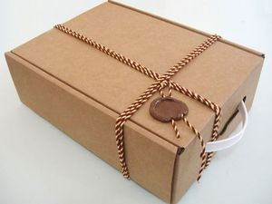

Картонные коробки стали неотъемлемой частью нашей повседневной жизни. Сегодня они представлены в самых разных формах и изготавливаются из различных материалов, включая круглые, квадратные и нестандартные варианты.

Изначально потребность в хранении молока привела к поиску подходящей тары. Идеальным решением долгое время считались стеклянные бутылки, но их хрупкость часто становилась проблемой. Именно эта особенность стекла подтолкнула к созданию картонной альтернативы. В 1915 году Джон Ван Уомер, владелец игрушечной фабрики, уронил бутылку молока, которая разбилась. Этот случай вдохновил его на разработку картонной упаковки.
Сам материал — картон — был изобретён в Китае около двух столетий назад. Однако серийное производство картонных коробок впервые было налажено в Англии в 1817 году. К началу XX века они практически вытеснили деревянные ящики, которые до этого были основным видом упаковки. Изобретателем складных картонных коробок в 1870 году стал шотландец Роберт Гейр. Любопытно, что он открыл этот способ случайно, экспериментируя с упаковкой для семян. Тогда же началось их массовое производство. Изначально картон резали вручную, но позже Гейр сконструировал станок, который одновременно нарезал материал и наносил на него печать, что стало настоящим прорывом в отрасли. Согласно международным стандартам, картоном считается бумага плотностью выше 224 г/м² или толщиной более 0,2 мм, хотя для пищевой упаковки допускаются исключения.
Одними из первых крупных производителей, начавших использовать картонные коробки, были американские компании, выпускавшие сухие завтраки. Их дизайн несколько отличался от современного. Так, фирма из Батл-Крика (штат Мичиган, США), работавшая в сфере здорового питания, быстро оценила преимущества новой упаковки для своей продукции. Картон оставался популярным до середины XX века, но в 1970–1980-е годы спрос на него снизился из-за распространения пластика. Однако сегодня картонные коробки вновь обрели широкую востребованность.